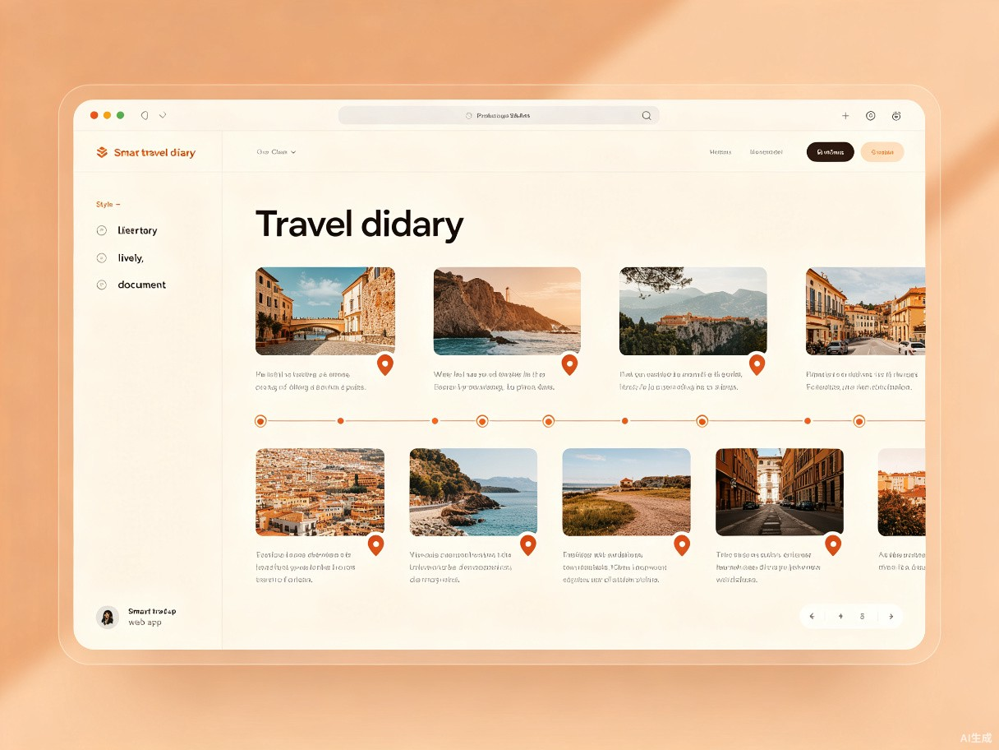
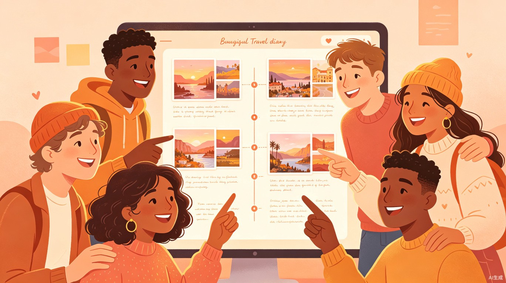

创意介绍
想解决什么问题
旅行结束后，面对手机里成百上千张照片和零散的GPS定位记录，想要整理成一篇有温度、有故事线的旅行日记非常耗时费力。大多数人的旅行回忆最终只是沉睡在相册里的数字文件——它们缺少叙事、缺少情感、缺少一个能让人反复翻阅的"容器"。
核心矛盾：旅行体验是丰富的，但记录方式是碎片化的。用户拥有素材，却缺乏将素材转化为故事的工具。
为什么会想到做这个
去年国庆自驾游回来后，我花了整整两个晚上整理照片、回忆路线、拼凑文案，才勉强发了一篇朋友圈长文，过程极其痛苦。当时就在想——如果能有一个工具，自动帮我梳理照片的时间线和地理位置，再生成一段流畅的游记文案，那该多好。
这不是一个人的困扰。身边几乎所有热爱旅行的朋友，都有过类似的经历：拍了上千张照片，却只发了九张到朋友圈，剩下的故事永远留在了手机里。
大概是什么产品
一个基于AI能力的轻量级网页应用（Web App），用户上传旅行途中的照片（含EXIF信息），即可自动生成一篇图文并茂、带有时间线叙事结构的旅行日记HTML页面，支持一键分享。

目标用户与痛点
面向哪些用户
热爱旅行和记录生活、喜欢在社交媒体分享见闻，但缺乏时间和文字组织能力的普通旅行爱好者，尤其是25-40岁的城市白领人群。
旅行爱好者
每年出行2-5次，热爱探索新地方，但旅行结束后往往没有精力整理记录。
拍照达人
每次旅行拍摄数百张照片，拥有丰富素材却苦于无法高效整理成故事。
社交媒体分享者
喜欢在朋友圈、小红书等平台分享见闻，希望内容有叙事感和个性风格。
回忆收藏家
珍视每一段旅行记忆，希望为家人和孩子留下可翻阅的成长足迹。
在什么场景下使用
旅行结束后返程途中或到家后的闲暇时间，用户打开网页，一次性上传整个行程中拍摄的照片，选择一种喜欢的叙事风格（如文艺、活泼、纪实），等待几分钟即可获得完整的旅行日记。
当前痛点分析
目前市面上缺乏专门的旅行日记自动生成工具。用户面临三种不理想的选择：
| 现有方式 | 优势 | 痛点 |
|---|---|---|
| 朋友圈九宫格 + 零散文字 | 操作简单、传播便捷 | 故事线断裂，信息碎片化，无法承载完整旅程 |
| 笔记App手动排版码字 | 自由度高、可深度定制 | 费时费力，需要较强的文字组织能力 |
| 相册自带回忆功能 | 自动化、零门槛 | 内容缺乏个性化和叙事逻辑，同质化严重 |
产品核心功能
使用流程
从上传到分享，只需四步：
上传照片
批量上传旅行照片，系统自动读取EXIF时间与GPS信息
选择风格
文艺清新 / 活泼幽默 / 纪实记录，一键切换叙事语调
AI 生成
智能梳理时间线、匹配地理位置、撰写叙事文案
一键分享
生成精美HTML页面，支持链接分享与社交平台导出
功能亮点
智能时间线梳理
基于照片EXIF信息，自动按拍摄时间排序，构建完整的旅行时间轴。即使照片来自不同设备（手机、相机、无人机），也能统一时间基准，还原真实的行程脉络。
地理位置可视化
读取照片中的GPS坐标，自动标注拍摄地点，在日记中嵌入地图轨迹。用户无需手动标记，系统自动识别城市、景区、地标，让每张照片都有"坐标感"。
多风格叙事文案
提供三种预设叙事风格：文艺清新——用诗意的语言描绘旅途见闻；活泼幽默——轻松诙谐的旅行吐槽风；纪实记录——客观详实的行程记录。AI根据照片内容和地理位置，生成贴合场景的文案。

技术架构概览
产品采用前后端分离的轻量架构，核心流程如下：
flowchart LR
A[用户上传照片] --> B[前端解析 EXIF]
B --> C[时间排序 + GPS提取]
C --> D[AI 文案生成]
D --> E[日记页面渲染]
E --> F[一键分享]
style A fill:#C8553D,color:#fff
style D fill:#588B76,color:#fff
style F fill:#C8553D,color:#fff
前端技术
HTML5 + CSS3 + JavaScript，使用 exif-js 解析照片元数据，纯静态渲染，无需安装任何App。
AI 能力
调用大语言模型API，根据时间线、地点信息和照片描述生成个性化叙事文案。
地图服务
集成轻量级地图组件，将GPS坐标转化为可视化轨迹和地点标注。
价值与意义
效率提升
将旅行回忆的整理时间从数小时级压缩到分钟级，大幅降低创作门槛，让"记录"这件事回归轻松愉快的本质。用户不再需要在排版和措辞上纠结，而是专注于回忆本身。
社会价值
帮助更多人保存和分享自己的生命体验，促进人与人之间更深度的情感连接与故事共鸣，让每一段旅程都不被遗忘。
愿景：让每一次出发，都有一份值得珍藏的回忆；让每一段旅程，都不再只是手机相册里的数字碎片。
总结
智能旅行日记生成器，是一个小而美的创意产品。它瞄准了一个真实存在的用户痛点——旅行照片整理难、日记创作门槛高——用AI技术提供了一种优雅的解决方案。
产品定位清晰：不做大而全的旅行平台，只做"旅行结束后帮你讲故事"这一件事，做到极致。轻量级Web App的形式让用户零门槛使用，一键生成的HTML页面让分享变得简单自然。
这不仅是一个效率工具，更是一个情感的放大器——它让旅行中那些稍纵即逝的美好瞬间，被完整地记录、优雅地呈现、温暖地分享。